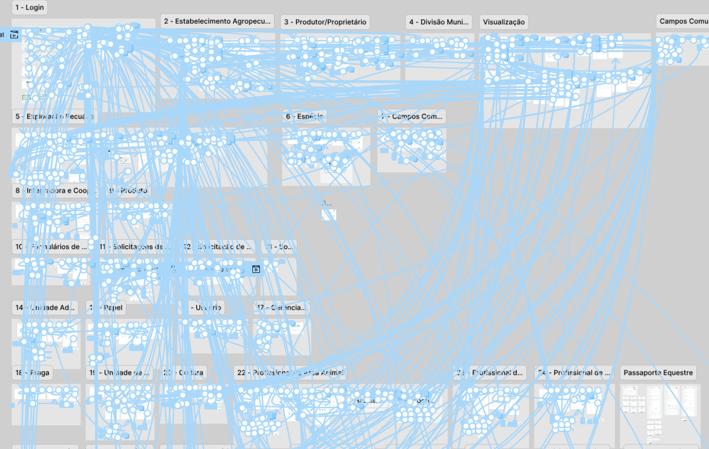

SIDAGRO / IMA
Clareza para um sistema de defesa agropecuária de alta complexidade.
Product Design · UX Research · Design System

O SIDAGRO é um sistema governamental ligado à defesa agropecuária de Minas Gerais. Fluxos extensos, diferentes perfis e regras de negócio exigem uma interface consistente e compreensível.
Do contexto ao sistema.
Minha atuação conectou pesquisa, análise de requisitos, definição de fluxos, prototipação e Design System. Também acompanhei a implementação e usei protótipos funcionais para explorar fluxos complexos.
- 45+ componentes no Design System.
- Avaliação heurística do sistema legado e da versão redesenhada.
- Exploração técnica com TypeScript, Node e React.

Avaliação entre versões.
Um estudo publicado comparou duas avaliações heurísticas do SIDAGRO: uma do sistema legado e outra da versão redesenhada. A segunda identificou 43% menos problemas de usabilidade no total. É um resultado da comparação entre versões do sistema, não uma medida isolada de causalidade do design.
